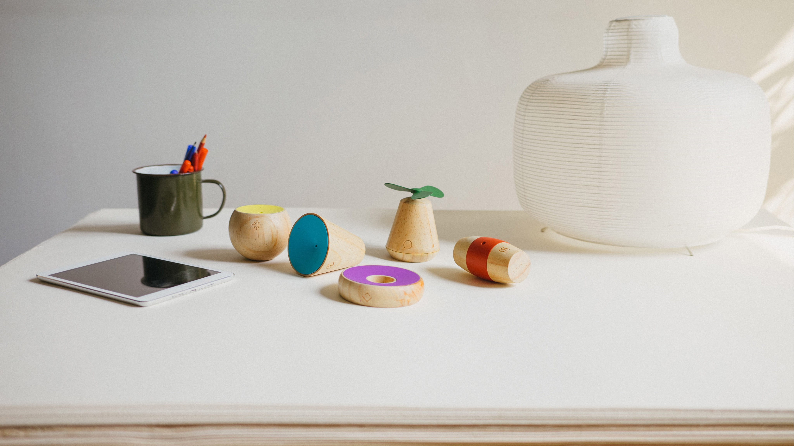

2016
Yibu
A digital/physical toy that teaches children about invisible data.

What if the invisible data around us could become a playground?
Yibu is a contextually aware game where sensors are tools for play — not measurement. Children solve challenges by shaping their physical environment: making it quieter, warmer, or brighter to help game characters thrive. Weather, air quality, light, temperature, and sound all influence the game world in real time.
Rather than displaying data as graphs, Yibu converts sensor readings into stories — contextual challenges that change depending on where and when you play. Every session is different. Prototyped with Arduino Yun, P5.js, custom BLE circuits, and Unity.
Developed as part of frogLabs in Shanghai with Tao Lin, Kaya Lee, Mingming Wang, Alex Ai, Paul Adams, More Tong, and Phil Salasses. Featured in Fast Company. DSA IDEA Award Silver, FastCo Innovation by Design Finalist.